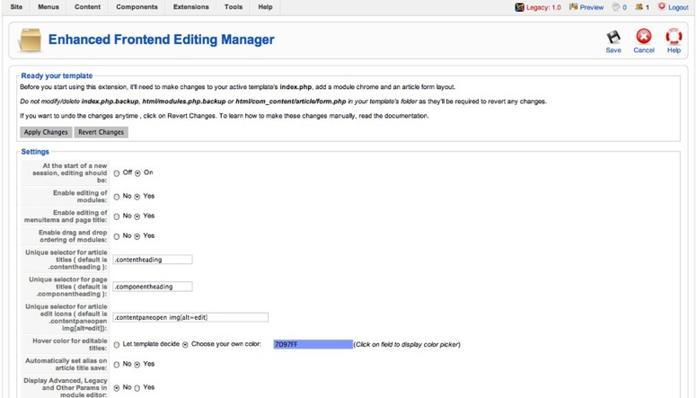
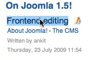
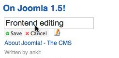
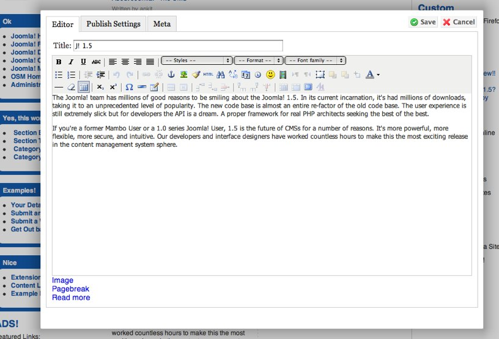
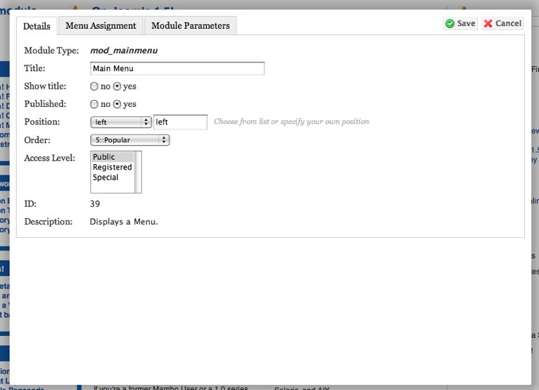
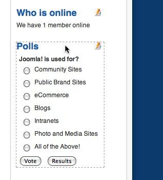

Select Components->Enhanced Frontend Editor
Enhanced Frontend Editing allows you to add increased frontend editing capability to your Joomla! Site. The Enhanced Frontend Editing Manager screen allows you to configure the behavior of this extension. It works in conjunction with the Frontend Editor and Frontend Article Editor plugins.

The functions are:
When you first install the extension, you’ll need to click on Apply Changes to get your current active template ready for this extension to work properly. You’ll need to apply the hack separately for each template you intend to use this extension with.
As a part of the hack, the extension does the following:
Your template's index.php is backed up as index.php.backup. Then, in your index.php:
The style “freditor” is added to the jdoc:include statements for modules. Eg:
<jdoc:include type="modules" name="user3" />
gets changed into:
<jdoc:include type="modules" name="user3" style="freditor" />
The jdoc:include statements for modules are surrounded by a div with the class attribute of the form ‘frpos.
<div class="frpos.newsflash">
<jdoc:include type="modules" name="newsflash" style="raw freditor" />
</div>
Your template's html/modules.php, if it exists, is backed up as html/modules.php.backup. The module chrome, modChrome_freditor, is then added to the modules.php of your template.
Your template's html/com_content/article/form.php is backed up if it already exists as form.php.backup. It is then completely overwritten with this extension's own layout file.
If, at any time, you want to revert the hack, you can do that by clicking on Revert Changes. It will make use of the backup files that were created when the hack was applied so make sure you don’t delete them and they will be recovered to their initial state.
You can change the following settings from the admin interface:
At the start of a new session, editing should be On/Off: When you first login into your site, should editing be On/Off. Rest of the time, your last editing state is used.
Enable editing of modules: Using this option, you can either enable or disable editing of modules at the frontend.
Enable editing of menuitems and page titles: Using this option, you can either enable or disable editing of menuitem titles and page titles at the frontend.
Enable drag & drop ordering of modules: Using this option, you can either enable or disable drag & drop placement of modules at the frontend.
Unique selector for Article titles: The unique CSS Selector for elements containing the article title. By default, it is .contentheading. If your template uses some other selector, you can mention it here.
Unique selector for Page titles: The unique CSS Selector for page title. It should not be the same as article title. By default, it is .componentheading.
Unique selector for article edit icons: The default article edit icons need to be hidden and so the selector for article edit icons must be specified if it is different than the default.
Hover color for editable titles: Here, you can either allow the template to specify the hover color, by using #fr_title{ background-color: <color> } in its CSS.
Or, you can pick your own color using the color picker.
Automatically set alias on article title save: When you edit an article's title, the alias of that article also gets automatically updated. Eg: If you rename the article as 'Frontend editing', its alias would get saved as 'frontend-editing'. You can set this to be enabled or disabled.
Display Advanced, legacy and other parameters in module editor: You can either enable/disable visibility of the advanced params at the frontend in the module editor.
Once you’ve set up this extension properly for your template, you can log in at the frontend and then you’ll be able to do the following:
Edit article, module, menu-item and page titles: You’ll be able to edit these titles by clicking on them. Once you click on them, an edit field will appear where you can change the text of the title and save it.
 
Edit articles in a modal popup: You’ll be able to edit articles in a modal popup by clicking on their edit icons.

Edit module parameters in a modal popup: You’ll be able to edit module parameters by clicking on the edit icon next to each module.

Drag & Drop modules: You’ll be able to drag and drop module in same and between positions. This way you’ll be easily able to change the ordering and position of modules and see the result in real-time.

To toggle editing at the frontend, you can press the key ‘e’ rather than clicking on ‘toggle editing on/off’ at the top-right hand corner of the screen everytime.
It is advised that before applying the changes again to the same template, you first revert the changes from the previous hack and then apply the changes again.
Menu Item titles will only be saved if they're contained in 'li' elements and have class attribute of the form 'item4' where 4 is the id of the menu-item. Similar to the default layout for mod_mainmenu.